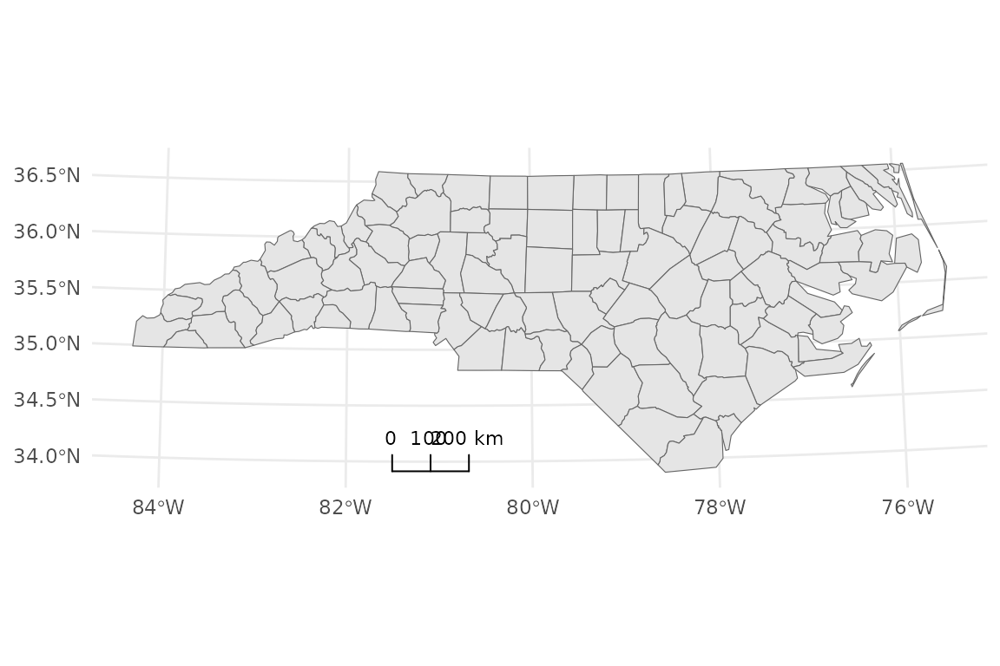
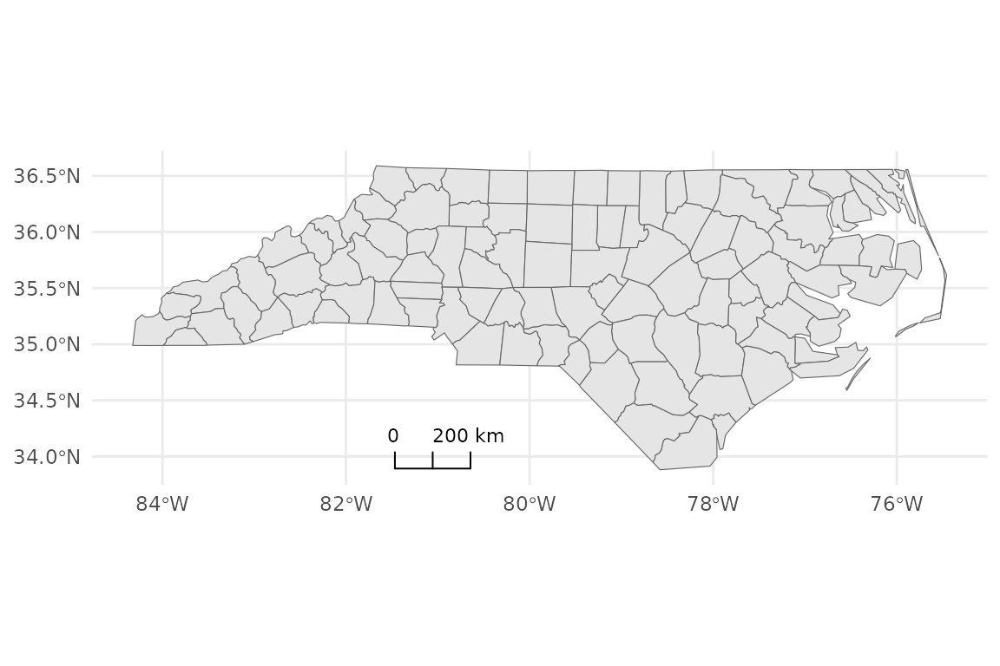
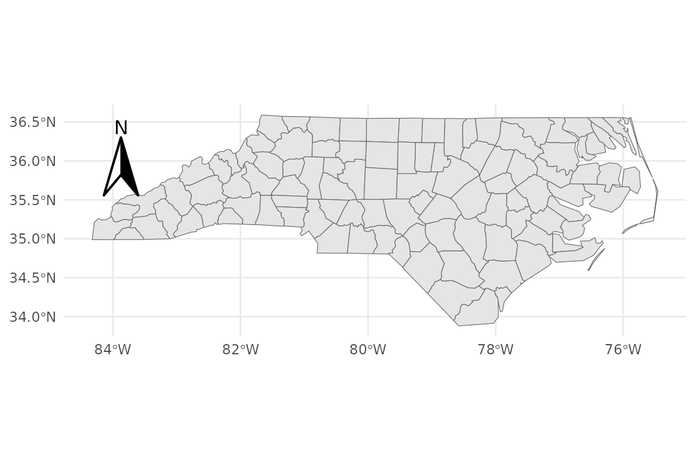
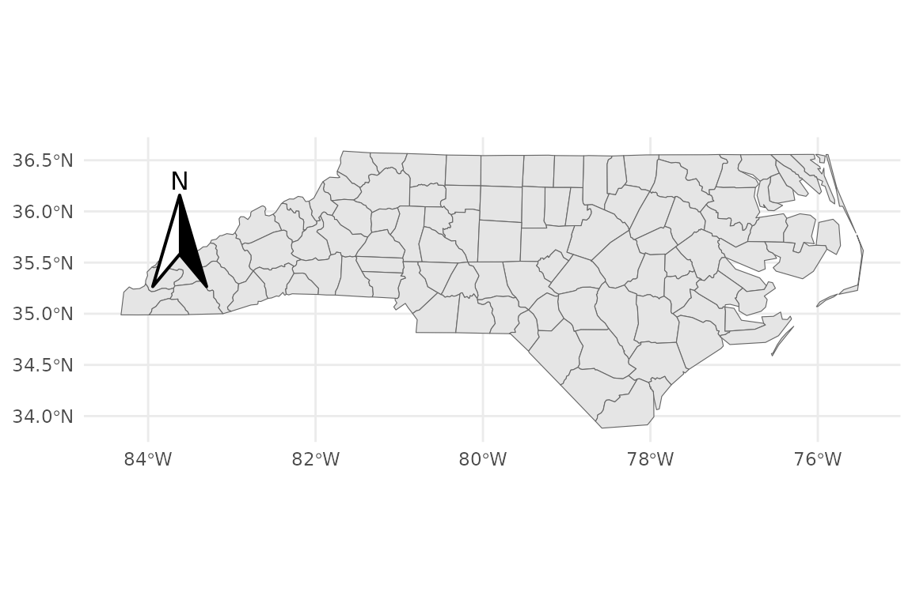
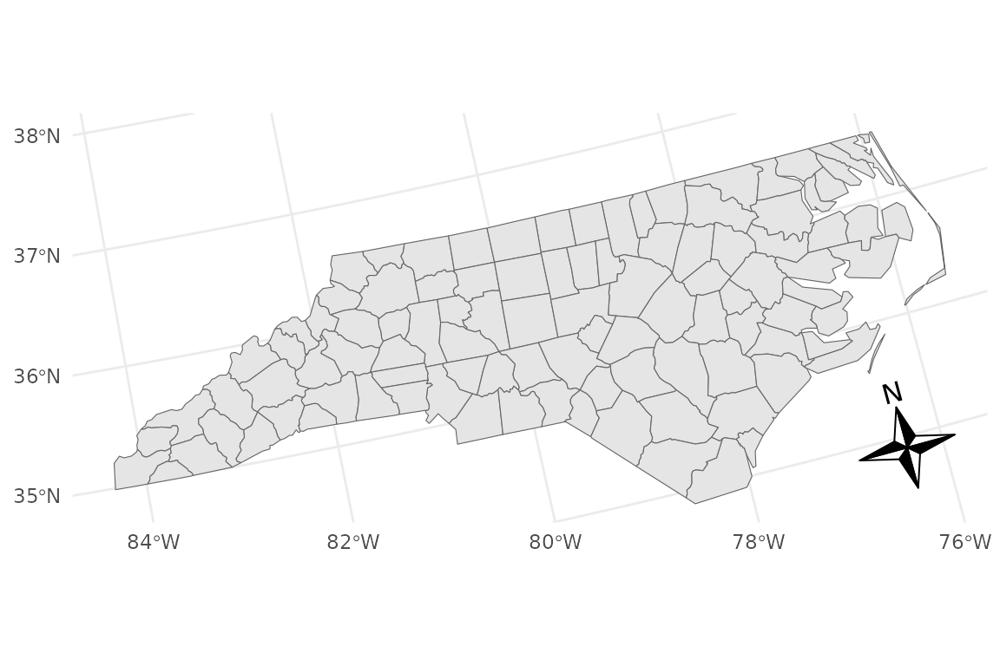
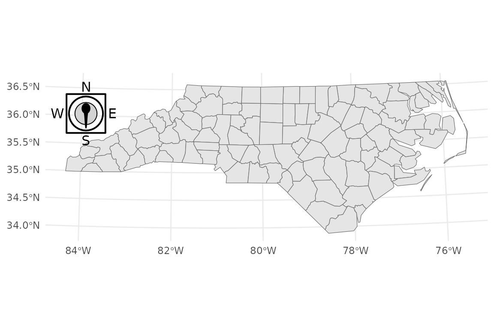
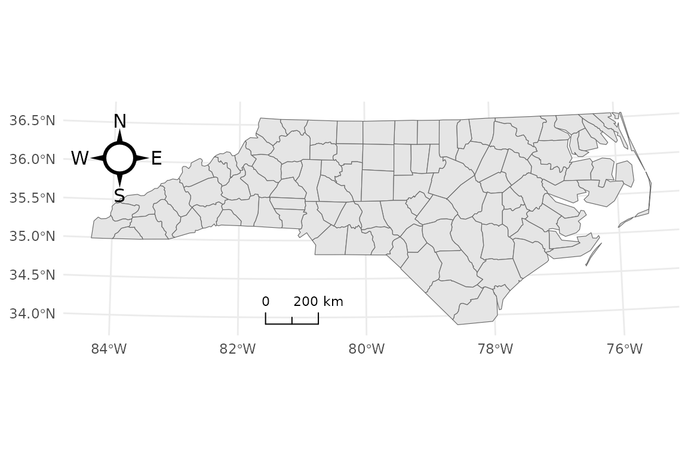

Advanced scale bar and compass annotations
Source:vignettes/Advanced_Scalebar_and_Compass.Rmd
Advanced_Scalebar_and_Compass.Rmd1. Setup
This vignette shows how to use the advanced options in
annotation_scalebar() and annotation_compass()
from ggmapcn.
library(ggplot2)
library(sf)
#> Linking to GEOS 3.12.1, GDAL 3.8.4, PROJ 9.4.0; sf_use_s2() is TRUE
library(ggmapcn)
nc <- sf::st_read(system.file("shape/nc.shp", package = "sf"), quiet = TRUE)
base_geo <- ggplot() +
geom_sf(data = nc, fill = "grey90", color = "grey40") +
theme_minimal()
base_geo
2. Basic scale bar in a projected CRS
base_proj <- base_geo +
coord_sf(crs = 32617) +
theme(axis.title = element_blank())
base_proj +
annotation_scalebar(location = "bl")
base_proj +
annotation_scalebar(
location = "tr",
width_hint = 0.5
)3. Scale bar styles
p_segment <- base_proj +
annotation_scalebar(
location = "bl",
style = "segment",
label_show = "all"
)
p_ticks <- base_proj +
annotation_scalebar(
location = "br",
style = "ticks"
)
p_bar <- base_proj +
annotation_scalebar(
location = "tl",
style = "bar",
bar_cols = c("black", "white")
)
p_segment
p_ticks
p_bar
base_proj +
annotation_scalebar(
location = "bl",
fixed_width = 100000,
display_unit = "km",
line_col = "red"
)
4. Geographic CRS: approx_m vs degrees
base_geo +
coord_sf(crs = 4326) +
annotation_scalebar(
location = "bl",
geographic_mode = "approx_m"
)
#> Warning: Scale bar is approximate in geographic CRS (degrees). Distances vary
#> with latitude. For accuracy, use a projected CRS, or set `geographic_mode =
#> "degrees"`.
base_geo +
coord_sf(crs = 4326) +
annotation_scalebar(
location = "bl",
geographic_mode = "degrees"
)5. Basic compass (grid north)
base_geo +
annotation_compass(
location = "tl",
style = north_arrow_classic()
)
base_geo +
annotation_compass(
location = "tl",
height = grid::unit(1.8, "cm"),
width = grid::unit(1.8, "cm"),
pad_x = grid::unit(0.7, "cm"),
pad_y = grid::unit(0.7, "cm")
)
6. True north (requires projection)
base_lcc <- base_geo +
coord_sf(crs = "+proj=lcc +lon_0=-100 +lat_1=33 +lat_2=45") +
theme(axis.title = element_blank())
base_lcc +
annotation_compass(
which_north = "true",
location = "br",
style = compass_rose_simple()
)
base_lcc +
annotation_compass(
which_north = "grid",
rotation = 30,
location = "tr",
style = north_arrow_solid()
)
7. Compass styles
p_classic <- base_proj +
annotation_compass(
location = "tl",
style = north_arrow_classic()
)
p_rose <- base_proj +
annotation_compass(
location = "br",
style = compass_rose_classic()
)
p_sinan <- base_proj +
annotation_compass(
location = "tl",
style = compass_sinan()
)
p_classic
p_rose
p_sinan
8. Combine scale bar + compass
base_proj +
annotation_scalebar(
location = "bl",
style = "ticks",
width_hint = 0.3
) +
annotation_compass(
location = "tl",
style = compass_rose_circle()
)